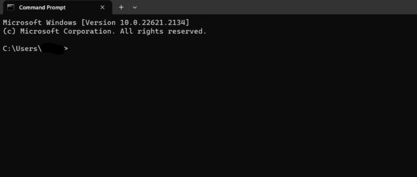
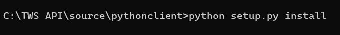
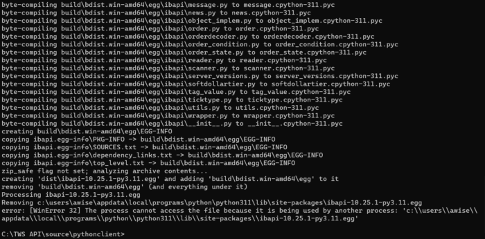
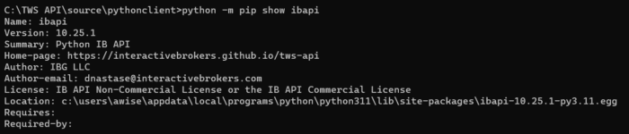

While all of the available Trader Workstation API default samples provide equivalent functionality, some languages have unique configurations that must be implemented in order to use our samples or program code with the underlying API.
Due to the malleability of the many Linux distributions including MacOS, Interactive Brokers is unable to provide a pre-built binary for the library. As such, users programming in C++ on a Linux machine must manually build the Intel® Decimal Floating-Point Math Library manually.
As described in the README file from the linked page, you can find the library’s build steps within the ~/IntelRDFPMathLib20U2/LIBRARY/README file.
Download the Intel® Decimal Floating-Point Math LibraryPython has a unique system for importing libraries into it’s IDEs. This extends even further when it comes to virtual environments. In order to utilize Python code with the TWS API, you must run our setup file in order to import the code.
In order to update the Python IDE, these steps MUST be performed through Command Prompt or Terminal. This can not be done through an explorer interface.
As such, users should begin by launching their respective command line interface.
These samples will display Windows commands, though the procedure is identical on Windows, MacOS, and Linux.

Customers will now need to run the setup.py steps with the installation parameter. This can be done with the command: python setup.py install

After running the prior command, users should see a large block of text describing various values being updated and added to their system. It is important to confirm that the version installed on your system mirrors the build version displayed. This example represents 10.25; however, you may have a different version.

Finally, users should look to confirm their installation. The simplest way to do this is to confirm their version with pip. Typing this command should show the latest installed version on your system: python -m pip show ibapi

After resolving the reference errors, using the TWSAPI may print a UserWarning upon connection. These warnings are predominantly cosmetic and can be ignored. These issues are caused by the Pypi release of protobuf running version 6.30.1 and above, while the TWS API is built with 5.29.3. The warning is simply notifying users that their version is 1 major version different. However, given protobuf is currently backgwards compatible, this should not present any issues with the implementation. Developers uncomfortable with the warning messages have a few options:
Our VB.NET code is provided for demonstration purposes only; there is no pure, standalone VB.NET-based TWS API library. Both our “VB_API_Sample” and the VB.NET “Testbed” projects included with our TWS API releases call the C# TWS API source. The provided VB.NET code only interfaces with the C# source. Please keep in mind that these samples are in VB.NET, not Visual Basic for Applications.